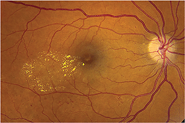

The last decade in ophthalmology has seen myriad innovations that have changed not only the way we practice, but more importantly the outcomes for our patients. The addition of intravitreal anti-VEGF injections to our armamentarium has changed the way we manage diseases like macular degeneration and retinal vein occlusions. While there was only one FDA-approved intravitreal injection for diabetic macular edema (DME) prior to 2014, the number of FDA-approved intravitreal injections has quadrupled with the recent approvals of aflibercept (Eylea, Regeneron), dexamethasone intravitreal implant (Ozurdex, Allergan) and fluocinolone acetonide intravitreal implant (Iluvien, Alimera Science) for DME. The latter two agents are of particular interest given their unique, long-acting platforms, and the debate has begun as to their utility and how best to initiate these therapies. We’ll examine that debate here.
The FDA initially approved the three to six month steroid-eluting dexamethasone (DEX) implant in 2009 for use in retinal vein occlusion. This year’s DME approval was based on data from the MEAD study, which demonstrated 22.2% of patients gaining three lines or more of vision versus 12% in the sham injection group (P ≤ 0.018) with a mean of 4.1 injections over three years.1 While 67.9% developed cataracts in the treatment group, 20.4% developed cataracts in the sham group. And though phakic eyes lost vision after year one, visual improvement was restored after cataract surgery. Two of the 351 patients (0.6%) in the treatment group required trabeculectomy.
The three-year data for the fluocinolone acetonide (FA) intravitreal implant also demonstrated significant differences in three-line gainers versus the sham injection group.2 At 36 months, 28.7% of implant-treated eyes gained three lines of vision versus 18.9% of sham eyes (P = 0.018).
As did some trial participants treated with dexamethasone, some trial participants treated with fluocinolone experienced cataract development. Cataracts progressed in nearly all phakic patients; 4.8% needed incisional glaucoma surgery.3
In a world in which anti-VEGF injections have given patients great results with minimal side effects,4 what is the value in these steroid implants?
These drugs bring immeasurable value to these patients. DME is the leading cause of blindness in the working-age population throughout the industrialized world, and nearly half of those developing DME will lose more than two lines of visual acuity within two years without treatment.5
Patients with DME demonstrate a complex comorbidity profile and high level of resource use. Seventy-five percent of DME patients have more than 15 medical visits per year (compared to 47% of non DME patients).6 Obviously, this disease is a substantial burden on working-age patients.
Investigators have demonstrated many interlinked pathways to the cellular damage that leads to DME, including those modulated by angiogenic growth factors and inflammatory cytokines. While anti-VEGF agents can mediate the former, steroids have the inherent ability to curb both pathways.
Aside from the anti-inflammatory actions of the DEX and FA implants, the real value is in the durability of the drugs. The 6-month DEX implant and the 36-month FA implant may allow for fewer overall treatments and fewer eye-care visits.
What is yet to be seen is how physicians will follow patients once implants are placed. Patient selection will be key, with close attention paid to steroid responders and those with glaucoma (both implants are contraindicated in patients with cup to disc ratios > 0.8).
Given the side effects, ophthalmologists can count on some degree of close monitoring and follow-up for these patients. In addition, as demonstrated in the studies, patients may need additional treatment (injections or laser) while on steroid implant therapy.
An additional value of the steroid implant is that our patients may be treated more completely. A recent study by Nancy Holekamp and colleagues looked into real-world treatment of DME using data from a large health system in Pennsylvania.7 They found that 75% of patients received three or fewer anti-VEGF injections with mean change in vision of 6 letters gained (versus the 11.4 letters in the RIDE study in which monthly injections were administered). The authors concluded that patients were being undertreated, perhaps due to the office-visit burden these patients face. Having longer-lasting therapies may help us achieve better visual outcomes with fewer injections.
Without treatment, nearly half of those developing diabetic macular edema (pictured) will lose more than two lines of visual acuity.
CREDIT: MICHAEL D. OBER, MD, FACS
As our experience with anti-VEGF medications grows, it is becoming increasingly evident that we need more than these agents (and laser) to treat DME. Physicians will find that those patients who are refractory to anti-VEGF agents may benefit from a switch to (or combination with) a long-acting steroid. If we are to believe that chronic edema is mediated more by inflammatory pathways and less by VEGF pathways, these chronic DME patients may be prime candidates for steroid implants. To support this, subgroup analysis of the FA implant for DME studies demonstrated that 34% of chronic DME eyes (DME greater than three years) gained three lines of vision versus 13.4% of sham eyes (P<0.001).8
Providers have also found it difficult to treat DME patients who have undergone vitrectomy. The shorter acting anti-VEGF agents may be less efficacious in these patients, and thus an implant may be a better, more durable choice.
The drug DEX offers value to cataract surgeons as well. The steroid implant seems to be a natural choice for those DME patients undergoing cataract surgery. According to the MEAD study,1 retinal thickness increased in DME patients after cataract surgery in sham eyes but not in the DEX implant group. This suggests that the steroid implants may have a protective effect against macular edema after cataract surgery.
Demographic analysis demonstrates a growing demand for our services while the population of ophthalmologists remains fairly flat. We will need to become more resourceful and part of this means treating patients more efficiently. Five years from now, we may no longer be treating patients with monthly injections, which will free us up to see more patients in need.
Also, the rapid growth of intravitreal injections and related costs are attracting significant health policy scrutiny. In 2013, the composite cost of intravitreal drugs accounted for the highest expenditures for Medicare Part B drugs.9 With these new FDA approvals, the use of intravitreal injections will likely increase. Furthermore, the rate of bilateral disease in DME is three times higher than in AMD, which may add to the logarithmic growth in intravitreal drug usage. For the good of our health-care system, we must continue to look for and use more efficient ways to treat our patients — long-acting agents like the DEX and FA implants may be one way to get us there.
We are at the beginning of significant accelerations in innovation and change in our field. The recent approvals of long-acting agents are just the beginning. With significant capital being invested in ophthalmologic drug development, long-acting drug platforms and medical devices aimed at sustained drug delivery, we are seeing the next phase of innovation in our field.
These changes will necessitate a change in our processes and clinic work flows, just as we changed when ranibizumab was first approved in 2006. With the growing DME population, these innovations will allow us to treat more patients more efficiently with the possibility of combination and individualized regimens that allow us to attain better outcomes for our patients. OM
1. Boyer DS, Yoon HY, Belfort R, Bandello F, et al, for the Ozurdex MEAD Study Group. Three-Year, Randomized, Sham-Controlled Trial of Dexamethasone Intravitreal Implant in Patients with Diabetic Macular Edema. Ophthalmology. 2014:121;1904-1914.
2. Campochiaro PA, Brown DM, Pearson A, et al, for the FAME Study Group. Sustained Delivery Fluocinolone Acetonide Vitreous Inserts Provide Benefit for at Least 3 Years in Patients with Diabetic Macular Edema. Ophthalmology. 2012:119;2125-2132.
3. Two-Year Results of Phase 3 VISTA Trial of Aflibercept for DME Treatment Show Sustained Vision Improvement. https://www.asrs.org/education/clinical-updates/211/twoyear-results-of-phase-3-vista-trial-of-aflibercept-for-dme-treatment-show-sustained-vision-improvement. Accessed Nov. 5, 2014.
4. Brown DM, Nguyen QD, Marcus DM, Boyer DS, Patel S, Feiner L, Schlottmann PG, Rundle AC, Zhang J, Rubio RG, Adamis AP, Ehrlich JS, Hopkins JJ; RIDE and RISE Research Group. Long-term Outcomes of Ranibizumab Therapy for Diabetic Macular Edema: The 36-Month Results from Two Phase III Trials.:RISE and RIDE. Ophthalmology. 2013:120:2013-2022.
5. Ciulla, TA et al. Treatment of diabetic macular edema with sustained-release glucocorticoids: intravitreal triamcinolone acetonide, dexamethasone implant, and fluocinolone acetonide implant. Expert opinion on pharmacotherapy 2014;15: 953-959.
6. Wallick C et al. Presented at the Association for Research in Vision and Ophthalmology 2014 Annual Meeting; May 4–8, 2014; Orlando, FL, USA
7. Holekamp N. Real-world vision outcomes in DME treated with anti-VEGF injections — an analysis of EMR data from a large US health system. Paper presented at: American Society of Retina Specialists 2014 Annual Meeting; August 9-13, 2014; San Diego, CA.
8. Cunha-Vaz J, Ashton P, Iezzi R, et. Al. Sustained delivery fluocinolone acetonide vitreous implants: long-term benfit in patients with chronic diabetic macular edema. Ophthalmology. 2014:121;1892-1903.
9. Williams GA. IVT Injections: Health Policy Implications. Review of Ophthalmology. 2014. http://www.reviewofophthalmology.com/content/t/retina/c/48732/. Accessed Oct. 27, 2014.
About the Authors | |
Dr. Sheth is Director, Scientific Affairs at University Retina and Macula Associates, and clinical assistant professor at University of Illinois at Chicago. Dr. Sheth is a consultant to Allergan and Alimera Sciences. Contact him at: vsheth@gmail.com | |
Dr. Hariprasad is Director of Clinical Research and Chief of the Vitreoretinal Service of University of Chicago, as well as professor of ophthalmology & visual science. He is a consultant to Alcon, Alimera Sciences, Allergan, Bayer, Clearside Biomedical, Genentech, Ocular-Therapeutix, OD-OS, Optos, and Regeneron. Contact him at: retina@uchicago.edu. | |